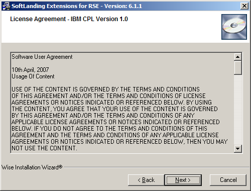

Installation/Update Instructions
Here you will find a screenshot tour of the RSE Extensions installation and update process in WDSC 6.0.
Installing the RSE Extensions
Download
Download the installer. The latest version is always available at http://support.softlanding.com/opensource/rse_extensions.exe. Once you have it downloaded, double-click to launch the installer.
Step 1:
Given that this is a standard Windows install wizards, the screens are fairly self-explanatory.

Step 2:
This screen shows the user agreement. As the heading says the RSE Extensions are available under the terms of the IBM CPL v1.0, a fairly standard open source license agreement -- the same agreement that Eclipse was originally licensed under. Eclipse now has their own version called the EPL.
Step 3:
Confirm the installation directory. It doesn't really matter what directory you install into except that it should be a new directory. You would not want to install this into one of the WDSC directories.

Step 4:
This screen just confirms that we detected that WDSC 6.0 is installed. If we did not find it, you would get a different screen that is not shown here.
Step 5:
Just a final confirmation screen.

Step 6:
The final screen, which you see after the install has completed.

Next Step:
With the install complete, just restart WDSC. You might want to move on to the overview, or perhaps you want to participate in the development of the RSE Extensions.
Updating the RSE Extensions
WDSC 6.0 has a feature in the preferences to automatically check for updates. Provided you
are not behind a proxy that does not allow this feature, it should work for the RSE Extensions.
You can manually initiate the check for updates by doing Help -> Software Updates -> Find and
Install. Then just follow the wizard.
If you are behind a proxy that does not work with WDSC, then to install updates you just
always follow the same instructions you used to install the first time. In other words, you can always
just download the latest version of the installer and re-run it. When you do this, the installer detects
that the RSE Extensions are already installed, and skips most of the wizard screens.